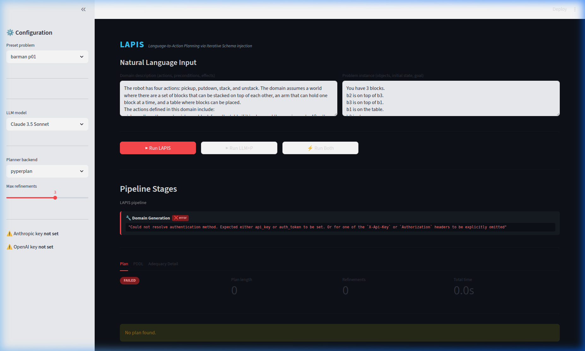

Transform natural language task descriptions into provably correct symbolic plans through LLM-guided PDDL synthesis with automatic refinement.

From natural language to executable plans in four stages
LLM generates PDDL domain from natural language task description with automatic syntax correction via VAL.
Domain schema is injected into LLM context for consistent problem generation with proper predicate grounding.
Creates PDDL problem instance encoding initial state and goal from natural language specification.
Closed-loop refinement using planner feedback until valid plan is found by classical solver.
Bridging LLM flexibility with symbolic planning rigor
Every generated plan is validated by VAL, ensuring logical soundness and executability before deployment.
Handle new domains without manual PDDL modeling. LLMs provide the semantic understanding, planners provide the search.
Successfully plans tasks with 80+ steps where pure autoregressive generation fails due to compounding errors.
Live web interface for real-time pipeline visualization, PDDL editing, and plan execution trace stepping.
Supports pyperplan, FastDownward, and SymK planners. Works with GPT-4o, Claude, and Gemini models.
Fully open-source implementation with benchmark suite, evaluation scripts, and reproducible experiments.
Evaluated on IPC domains from the LLM+P benchmark suite
VAL = the plan passes PDDL validation (self-consistent) · GT = the plan actually runs in the ground-truth simulator · Claude Sonnet 4.6 + FastDownward Columns marked * use the human-authored ground-truth PDDL domain and are provided as upper-bound references only. Hover a column header to learn what each method does, or hover a domain name for a description of that benchmark.
| Domain | LLM+P* | NL2Plan | GT-LAPIS²* | LAPIS² | Sim-LAPIS² | |||
|---|---|---|---|---|---|---|---|---|
| Few* few-shot | Zero* zero-shot | 325s/task 2 domains | GT* oracle domain | Zero 0 iterations | Dom. 3-iter synth. | Adq. + adequacy check | VAL / GT real executability | |
| Blocksworld | 100 | 80 | 95 | 100 | 100 | 100 | 100 | 100 / 90 |
| Floortile | 100 | 45 | — | 90 | 90 | 90 | 85 | 100 / 75 |
| Tyreworld | 95 | 90 | — | 95 | 75 | 75 | 90 | 100 / 45 |
| Storage | 100 | 90 | 25 | 100 | 75 | 100 | 100 | 100 / 35 |
| Barman | 95 | 0 | — | 80 | 0 | 50 | 100 | 100 / 90 |
| Grippers | 100 | 100 | — | 100 | 100 | 100 | 100 | 100 / 90 |
| Termes | 100 | 95 | — | 100 | 95 | 100 | 100 | 100 / 85 |
| Avg | 99 | 71 | — | 95 | 76 | 85 | 96 | 100 / 73 |
* These methods receive the human-authored PDDL domain as input and serve as upper-bound references. They are not directly comparable to synthesis methods that must build the domain from scratch.
Every non-Sim-LAPIS² method shows VAL score only. Their GT executability is 0% across all domains: plans are validated against the synthesized PDDL schema, which uses different action and object names than the ground-truth simulator. Sim-LAPIS² is the only method that bridges this gap, using an LLM-based assignment mapping to translate synthesized plans into ground-truth terms.